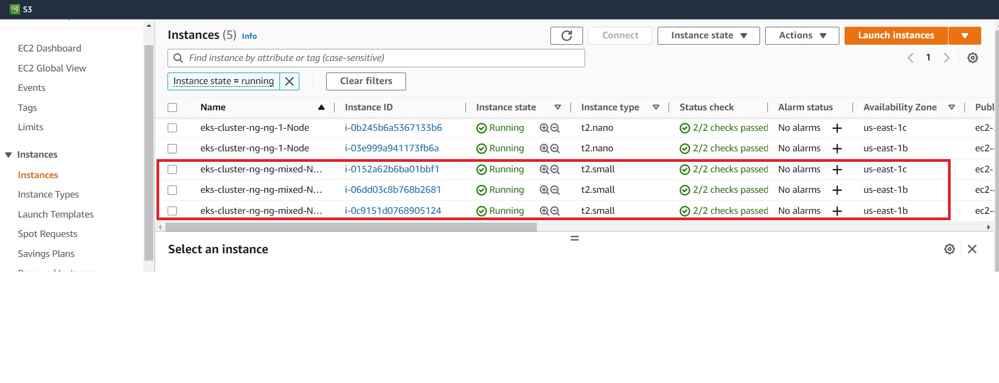

Extend Cluster
In this section we will extend the cluster by adding a nodegroup that contains a mix of:
- On-demand instances
- Spot instances
Define Yaml file
Create folder cluster-ng-mixed. We will now extend the cluster by adding a nodegroup to file eks-cluster.yaml. The file adds a new nodegroup ng-mixed.
Copy the following contents :
apiVersion: eksctl.io/v1alpha5
kind: ClusterConfig
metadata:
name: eks-cluster-ng
region: us-east-1
nodeGroups:
- name: ng-1
instanceType: t2.nano
desiredCapacity: 2
ssh: # use existing EC2 key
publicKeyName: eks-course
- name: ng-mixed
minSize: 3
maxSize: 5
instancesDistribution:
maxPrice: 0.2
instanceTypes: ["t2.small", "t3.small"]
onDemandBaseCapacity: 0
onDemandPercentageAboveBaseCapacity: 50
ssh:
publicKeyName: eks-course
This tells EKS to :
- Add a new nodegroup
ng-mixed - Set min & max size
- Define the instance types
- 50% of the instance types are on-demand and the rest on spot
Add nodegroup
First check your cluster is running :
eksctl get cluster
PS C:\Users\aniru\workspace\github\aws-eks\cluster-ng> eksctl get cluster
NAME REGION EKSCTL CREATED
eks-cluster-ng us-east-1 True
Let's add the new nodegroup :
eksctl create nodegroup --config-file=eks-cluster.yaml --include='ng-mixed'
PS C:\Users\aniru\workspace\github\aws-eks\cluster-ng-mixed> eksctl create nodegroup --config-file=eks-cluster.yaml --include='ng-mixed'
2023-02-14 03:25:59 [ℹ] will use version 1.23 for new nodegroup(s) based on control plane version
2023-02-14 03:26:06 [ℹ] nodegroup "ng-1" will use "ami-0d4bdb1cf2f07d811" [AmazonLinux2/1.23]
2023-02-14 03:26:07 [ℹ] using EC2 key pair "eks-course"
2023-02-14 03:26:07 [ℹ] nodegroup "ng-mixed" will use "ami-0d4bdb1cf2f07d811" [AmazonLinux2/1.23]
2023-02-14 03:26:08 [ℹ] using EC2 key pair "eks-course"
2023-02-14 03:26:11 [ℹ] 1 existing nodegroup(s) (ng-1) will be excluded
2023-02-14 03:26:11 [ℹ] combined include rules: ng-mixed
2023-02-14 03:26:11 [ℹ] 1 nodegroup (ng-mixed) was included (based on the include/exclude rules)
2023-02-14 03:26:11 [ℹ] will create a CloudFormation stack for each of 1 nodegroups in cluster "eks-cluster-ng"
Note line combined include rules: ng-mixed
Also check the new nodegroup ng-mixed created after a few minutes by running below command. Check min size and max size :
PS C:\Users\aniru\workspace\github\aws-eks> eksctl get nodegroup --cluster=eks-cluster-ng
CLUSTER NODEGROUP STATUS CREATED MIN SIZE MAX SIZE DESIRED CAPACITY INSTANCE TYPE IMAGE ID ASG NAME TYPE
eks-cluster-ng ng-1 CREATE_COMPLETE 2023-02-14T07:23:00Z 2 2 2 t2.nano ami-0d4bdb1cf2f07d811 eksctl-eks-cluster-ng-nodegroup-ng-1-NodeGroup-1LRT8H4ZKAVO9 unmanaged
eks-cluster-ng ng-mixed CREATE_COMPLETE 2023-02-14T08:26:13Z 3 5 3 t2.small ami-0d4bdb1cf2f07d811 eksctl-eks-cluster-ng-nodegroup-ng-mixed-NodeGroup-1I8YSGYWKO2O5 unmanaged
You can also review this on AWS console :

Delete nodegroup
Now let's drain the ng-mixed nodegroup we just created so we don't incur additional costs :
eksctl delete nodegroup --config-file=eks-cluster.yaml --include='ng-mixed' --approve
The draining will usually take some time as is indicated by STATUS=DELETE_IN_PROGRESS:
PS C:\Users\aniru\workspace\github\aws-eks> eksctl get nodegroup --cluster=eks-cluster-ng
CLUSTER NODEGROUP STATUS CREATED MIN SIZE MAX SIZE DESIRED CAPACITY INSTANCE TYPE IMAGE ID ASG NAME TYPE
eks-cluster-ng ng-1 CREATE_COMPLETE 2023-02-14T07:23:00Z 2 2 2 t2.nano ami-0d4bdb1cf2f07d811 eksctl-eks-cluster-ng-nodegroup-ng-1-NodeGroup-1LRT8H4ZKAVO9 unmanaged
eks-cluster-ng ng-mixed DELETE_IN_PROGRESS 2023-02-14T08:26:13Z 0 0 0 t2.small ami-0d4bdb1cf2f07d811 eksctl-eks-cluster-ng-nodegroup-ng-mixed-NodeGroup-1I8YSGYWKO2O5 unmanaged